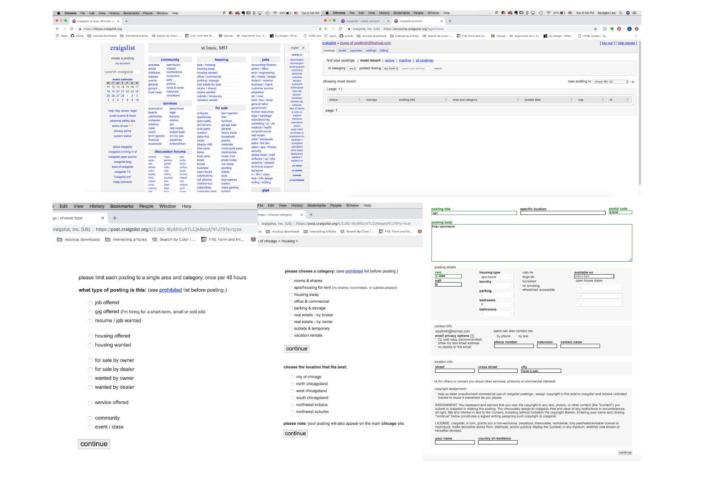

Craigslist Mobile App Case Study
2019
This is a fictional case study for Craigslist.com's mobile application, focusing on the process of creating a posting and managing messages for a user who is a broker. Despite being ranked #1 in the "Shopping > Classifieds" category (according to Similarweb.com), Craigslist continues to exist without a direct mobile counterpart to its website.
I designed the app under the assumption that Craigslist's initial test release for the app would be for the audience proifle of real estate brokers — whom Craigslist profits the most from — in Chicago. For this audience, the mobile app would be only be significantly useful if it could reduce the time for them to create a posting, as well as making it easier for them to manage responses from prospective tenants.
See the full posting sequence of the app below. Or skip to see my process.
PROCESS
Researching Product Landscape
My first step in approaching this request was to research the current product landscape. I mainly focused on 5 brands in a similar market, including Craigslist itself: Craigslist.com, CPlus, CLX, Trulia, and Airbnb. CPlus and CLX are third party apps for Craigslist. Trulia, unlike Craigslist, only focuses on rental listings. Airbnb offers services for both hosting and renting.
Craigslist.com: Homepage, Managing Page, Initial Posting Steps, Main Posting Body
Takeaways from the Research:
1. Managing Postings
None of the current Craigslist apps (including Craigslist.com) utilizes a built-in messaging system. A smoothly integrated messages section that allows the user to manage client responses in tandem with one’s postings could really help our broker user base.
2. Helping the Users Feel Less Overwhelmed
The Craigslist website and apps present a lot of information to our users at once. Trulia and Airbnb demonstrate user-friendly UI that improves UX.
Identifying User Needs
In order to start identifying user needs, I refined the target persona for the app:
For the new app to be successful, it had to be optimized for Craigslist's core users, who are of similar profile to that of Betty. As seen above, I focused on identifying Betty’s values as a broker on craigslist and her core activities on craigslist. Then I combined this information with Craigslist’s goals as a company, which are to increase revenue as a company, to make the posting process faster for users, and to make it easier for brokers to manage client responses. However, my research showed that only brokers in the NYC area pay the broker fee to make a posting — so this did not factor in for Betty, who is active in the Chicago area.
User Journey Map
The user journey map along with the wireframe sketches shows how the aforementioned capabilities will be implemented in the Craigslist app. These will focus on making the user experience of creating a posting easy to follow and time efficient, as well as making the user’s postings and messages easily manageable directly from the app. I sectioned out the whole experience into 6 parts: Research, Discovering the Craigslist App, Using the App, Using the Dashboard, Managing Listings, and Managing Messages. With each of these parts, I documented both Betty’s actions and her thinking during the actions.

Low-Fidelity Wireframes
Figma was used to create this project.